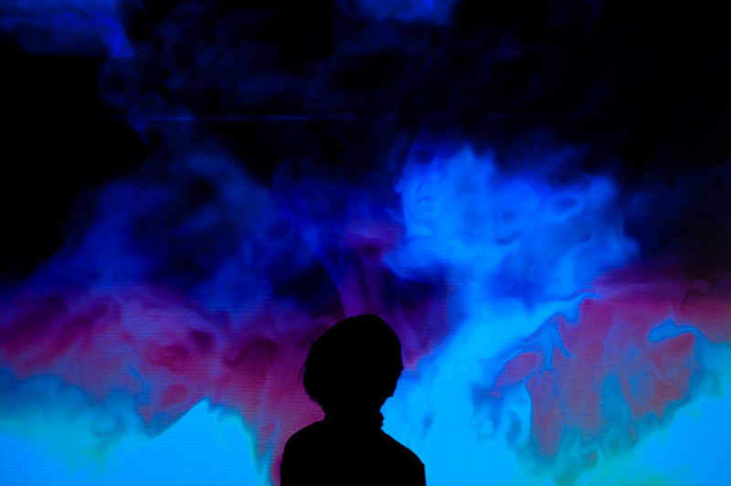

The Topological Media Lab (TML) was a trans-disciplinary atelier-laboratory for collaborative research-creation, founded by Sha Xin Wei in 2001 and based at Concordia University in Montréal since 2005. Its projects brought together realtime video, sound and lighting, embedded sensors and gesture tracking with movement arts, speculative architecture and experimental philosophy, often in the form of responsive environments that change with the movements of the people inside them.
I was a member of the TML from 2012 to 2022. Over that time I worked as its Technical Coordinator and as a developer in Max and GLSL.
Most of my work at the TML went into the lab's shared codebase. I built and maintained its library of realtime video modules for Max and Jitter, including GPU-based fluids, particles, feedback and time-based effects, keying, motion analysis and ports of Shadertoy shaders, as well as modules for x-OSC wireless sensor boards and DMX lighting control. On top of these, I wrote the control and interface logic for many of the lab's collaborative projects.
Much of this work fed into Ozone, the lab's set of tools and practices for assembling coherent responsive environments, in which several distinct artworks could communicate with each other as well as with visitors. I focused on building the shared infrastructure that made this possible. I also taught workshops on the lab's realtime video tools.
Max, Jitter, GLSL, Jamoma, ossia
Aquaphoneia is an installation by Navid Navab and Michael Montanaro that transmutes voice into water. Visitors speak into a large horn, and their voices flow into three alchemical chambers. It premiered at Ars Electronica in 2016, and a revised version was first shown at the Némo Biennale in Paris in 2017.
For the 2017 revision, I built the tablet interface that gallery staff used to operate and calibrate the installation during exhibitions, along with control logic for the horn, including an adaptive, non-repeating random sequence that decides which chamber receives water next based on which chambers are active. I also reviewed and documented the horn's DMX control patch, and later adjusted its lighting and valve settings for exhibitions including Sonica in Glasgow.
My first project at the TML, in 2013, was building a GPU-based version of IL Y A, a double-sided video installation. In 2017, I did sensor and camera work with circus artist Naël Jammal that later grew into Cirk 2.2. I also provided projection support for the "River" section of Dwellings (2017).